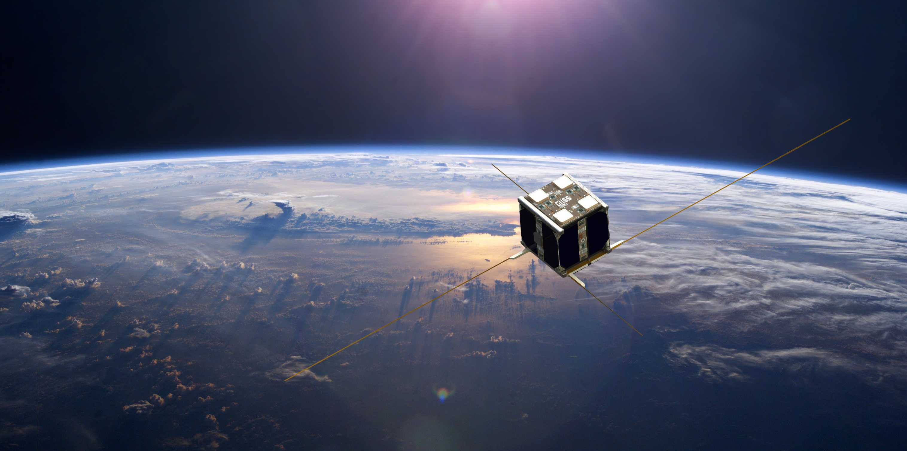

Our Story
Alcyone started as a senior thesis of Eirini Mitsa and Konstantinos Patsaras with supervisor, Professor Stamelos Ioannis, School of Informatics, Aristotle University of Thessaloniki. The goal was to design a prototype for a system service that offers localization and detection of user defined objects by their characteristics and other general search filters.
A feasibility study was conducted and two Machine Learning Models for ship detection on satellite images were developed. Our research verified the technical feasibility and data requirements for the proposed system and concluded that although there is a high computational cost and need for image data, applying state-of-the-art Deep Learning algorithms presents a feasible solution. At last, the project took part in the 1st Defense Innovation Challenge by Hellenic Ministry of Defense.
Since successful completion of that project, Alcyone has evolved and plans to offer an advanced system for segmentation and detection of sea pollution incidents. In addition our system is capable of offering seaport surveillance and open sea monitoring for illegal ship activities.